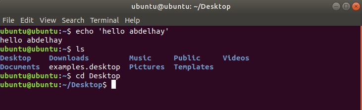

Welcome to the first part of the "Linux Fundamentals". You're most likely using a Windows or Mac machine, both are different in visual design and how they operate. Just like Windows, iOS and MacOS, Linux is just another operating system and one of the most popular in the world powering smart cars, android devices, supercomputers, home appliances, enterprise servers, and more. This page will have you: 1/ Running your very first commands in an interactive Linux machine in your browser 2/ Teaching you some essential commands used to interact with the file system 3/ Demonstrate how you can search for files and introduce shell operators
In this page we'll be using Distrosea so you can interact with all within your browser whilst following along with this page.
As we previously discussed, a large selling point of using Operating Systems such as Ubuntu is how lightweight they can be. This, of course, doesn't come without its disadvantages, where for example, often there is no GUI (Graphical User Interface) or what is also known as a desktop environment that we can use to interact with the machine (unless it has been installed). A large part of interacting with these systems is using the "Terminal". The "Terminal" is purely text-based and is intimidating at first. However, if we break down some of the commands, after some time, you quickly become familiar with using the terminal!
username@linux:~$ echo "Hello, Linux!"
Hello, Linux!
username@linux:~$ ls
Documents Downloads Pictures Music
username@linux:~$ cd Documents
username@linux:~/Documents$
In the example above I ran 3 commands: echo: we use it to output any text that we provide. ls: means 'list', we use it to list all the files and folders in our current directory. cd: means 'change directory', we use it to change from our current directory to another. it's now your turn to run your first Linux commands, go to Distrosea then search for Ubuntu, choose any version you want, and run the terminal shown in the desktop. It's gonna look like this:  Feel free now to try all the commands in the terminal and try to understand what they do. some of the commands are :
username@linux:~$ man pwd
pwd - print name of current/working directory
to be continued...